Neural networks explained through visualizations and animations
Written by Naphat Amundsen
Republished from Medium.
Revealing the underlying simplicity of artificial neural networks.
When I first began learning about neural networks I remember seeing many resources saying something along the lines of:
Neural networks are inspired by the brain. You implement them using dot products and matrices, and then you train them using gradient descent. They work really well, but how they “think” is still an unsolved mystery. Here, look at these equations and figures!
I completely agree with the statements, however, I feel people will miss a surprisingly simple interpretation of neural networks when they only get introduced through mostly equations and figures such as:
The equation for the sigmoid function. It can be used as an activation function in neural networks.
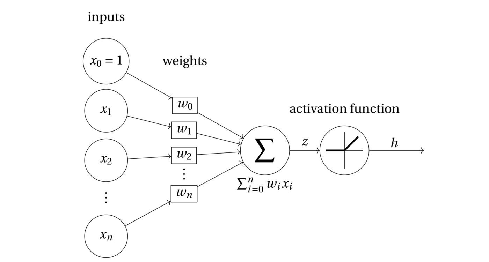
A diagram illustrating a perceptron, the “base component” of a neural network.
I will instead illustrate what the neurons in neural networks are and how they work together solely through pretty plots and animations!
Prerequisites
This article is for the people who have already gotten their feet wet with machine learning and related concepts. I will assume that you are already familiar with the following:
- Scatter plots
- Graphs (the type that has nodes and edges)
The essence of classification
Before going further I would like to summarize the essence of classification. Feel free to skip this section if you are confident about the topic.
For illustration, I have generated a data set with diameter and weight “measurements” of apples and oranges visualized in the following figure:
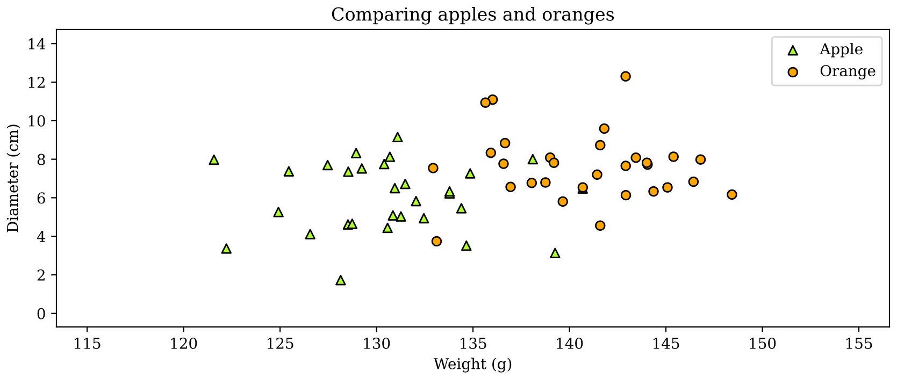
A scatter plot of a fictive dataset consisting of size and weight measurements of apples and oranges.
Notice how the apples and oranges are grouped together. In a sense, there is an area of apples and an area of oranges.
The dataset we have is labeled, meaning that we know the class (apple or orange) for each data point. We can use this labeled data to determine the classes of unknown points, making this a training data set.
Suppose we want to classify an unknown fruit to be an apple or an orange based on it's weight and diameter measurements. Here the measurements of the unknown fruit is visualized as an X among the other points in the dataset.
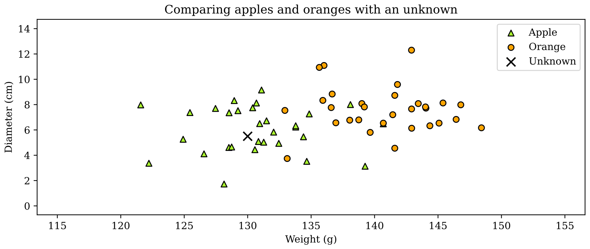
This figure includes the data from the previous figure but also includes the “unknown” point (a fruit that is either an apple or an orange) denoted by the “X”.
A reasonable decision for the class of the unknown fruit would be apple since it is in the “area” of the apples, so let's just decide that it is an apple based on that. We just classified an unknown point!
Doing such a task is basically the essence of classification. We humans can just look at the plot and see that the unknown point is “within the area of apples”. To make a computer do such as task we must define an algorithm to do so. There are many methods that could work, for example, the k nearest neighbors algorithm. Which basically finds some of the nearest points in the labeled data set (training data) and checks what the majority class of said points is. However, I will propose a method using lines.
Classifying apples and oranges using lines
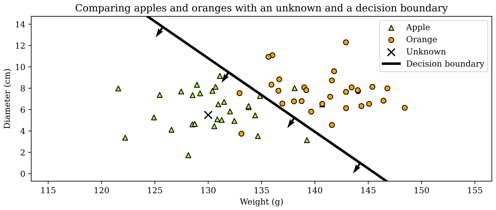
The dataset with a line. The line acts as boundary between the “areas” of apples and oranges. The arrows denotes the “front” of the line. We can say that this line is “facing the apples”.
The classification method I am proposing is to use a line to act as a separating boundary, where one side of the line belongs to the apples and the other to the oranges. With this we can determine the class of the unknown point X by simply checking which side of the line it is on. For this case this line method works fine since the apple and orange “areas” are fairly easy to separate using a single line.
Let's expand the problem a little bit by adding pears to the dataset as well.
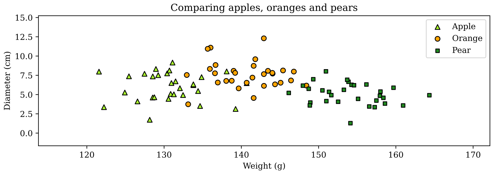
Visualization of the dataset, but now with “measurements” of pears added as well.
A single line will now be insufficient to classify whether an unknown fruit would be an apple, orange or pear, as we can only tell whether a point is in front or behind it, which won't work when you have three classes. A solution could be to add another line:
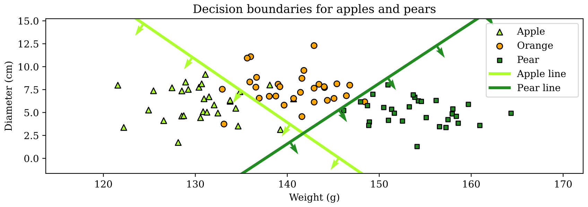
There are added lines / boundaries for the apple and pear class respectively. The apple line is “facing the apples” and the pear line is “facing the pears” as denoted by the arrows on the lines.
The lines facing the apple and pears represent the apple and pear boundaries respectively. To use these two lines to classify an unknown point we can use the following if-else statement:
- if the point is in front of the apple boundary it is classified as an apple
- else if the point is in front of the pear boundary it is classified as a pear
- else if the point is behind both the apple and pear boundaries, it is an orange
Thus we have an algorithm for this problem!
However, having to manually implement such if-else logic is not really the “machine learning way”. Real-world problems usually consists of higher dimensions which are non-trivial to visualize, making it difficult to manually implement such logic.
An arguably more general approach would be to have a line for each class, such that the classification logic is simply “if the point is in front its class-boundary”. Thus, let us add a line for the orange class as well:
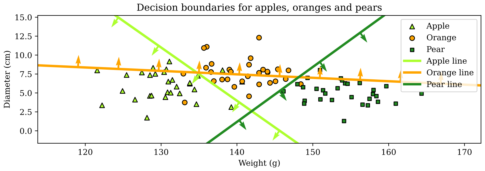
Apples, orange and pears dataset along with three decision boundaries for each class.
If we were to apply the aforementioned logic for this case, our algorithm would be kind of bad, as there is a triangular region in the middle that isn't in front of any boundary, and the boundary for the orange class literally cuts through half of the “area of oranges” as there isn't really any good location to place it. We need something more.
Activation
To address the triangular region in the middle in the previous figure, we will introduce a notion of activation, in order to account for how far in-front or behind data points are from the boundaries. For instance, a point far in front of the apple boundary is in a sense “surely an apple”, compared to a point that is barely within the apple boundary, which would be “weakly an apple”. A point just behind the apple boundary would in a sense be “maybe an apple”, while a point far behind the apple boundary would be “probably not an apple”. The following animation illustrates the concept:
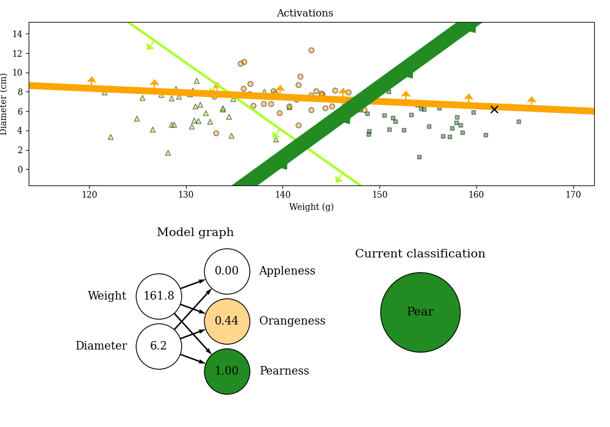
The “X” represents a point with unknown class. The underlying data set from before is still visible, but with the legend removed to reduce clutter. For each frame, we see how activated each line is respective to the position (measurements) of “X”. The model graph is an alternative representation of the activation for each line respective to the position of “X”. The current classification is determined from which line is the most activated.
The top plot shows the decision boundaries “activating” based on the position of the point X. The coordinate position of X is represented in the two left-most nodes of the model graph. The model graph shows how much each decision boundary is activated with respect to the position of X. The activations for each decision boundary are visualized in two ways simultaneously: the decision boundaries' thickness and the color and value of the applenes/orangeness/pearness nodes in the model graph.
There are patterns in the animation that I would like you to observe:
- The orangeness is high and the orange line is “very activated” (thick) when X is far in front of the orange line, thus it is signaling that the point is very an orange.
- The orangeness is low and the orange line is thin when X is far behind it, thus it is signaling that the point is not an orange.
- Points 1 and 2 holds true respective to the pear and apple lines as well.
- The “current classification” is determined from which line is the most activated at the time, or alternatively you could look at the model graph and see which is the most activated of the appleness / orangeness / pearness nodes.
With this method we can get a model that only uses lines to predict unknown points (no need to manually implement any if-else logic). We simply determine the predicted class based on which class-line is the most “activated”. Thus we have a better algorithm for this task!
One detail that the animation fails to convey is that the activations are technically never zero or one. It just seems like it because of the rounding. When a point is in the middle of the triangular region one could think that all the activations are zero, but in reality all the lines have at least some activation, albeit very small. Thus the logic of determining the class based on the most activated line / node always holds. In the very unlikely case where the activations are all equal, the class is determined on the implementation of the max function in whatever language the neural network is implemented in. Anyways, back to the point.
But still it doesn't really solve that the orange line is just awkwardly placed:
Apples, orange and pears dataset along with three decision boundaries for each class (same figure as previously).
The placements of the apple and pear lines are reasonable, but the orange line doesn't really separate the oranges properly from the rest, compared to how well the apple and pear lines separate their respective classes. The two-line model introduced before with the if-else logic makes more sense in a way, as it doesn't have that awkward line cutting through the oranges:
There are added boundaries for the apple and pear class respectively. The apple line is “facing the apples” and the pear line is facing the “pears” as denoted by the arrows on the lines. (same figure as previously).
What if we could automate the if-else logic such that we could use the two-line model that is simple and reasonable?
Adding some depth to the model
Each data point in the training data set has their corresponding apple-activation (appleness) and pear-activation (pearness) values (referring to the animation above). We will see something interesting if we plot the appleness and pearness values for each data point:
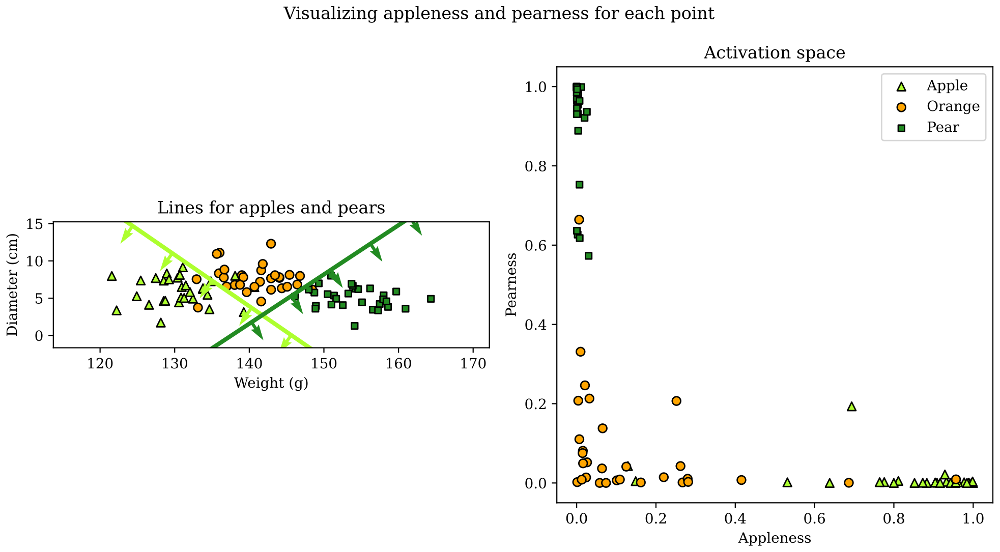
The left plot shows the same figure as above. The right plot shows the activations respective to each datapoint.
I will refer to the right plot as the “activation space”. The activation space shows a transformed representation of the data based on the apple and pear lines and their activation values respective to each data point. We can use another set of lines to separate the three classes in the activation space instead!
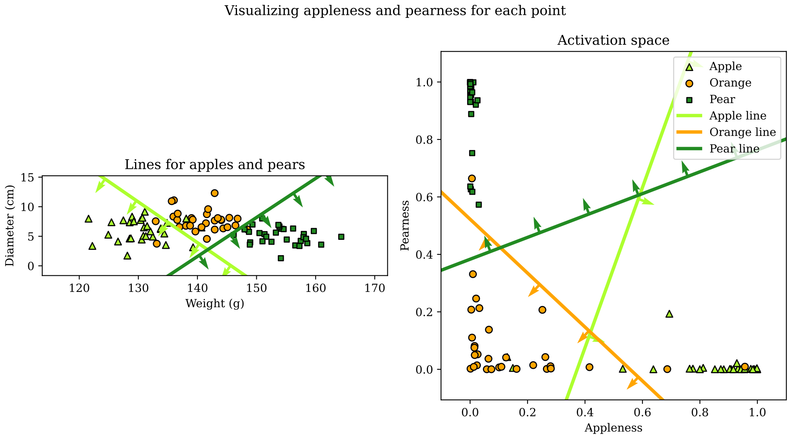
The activation space with decision boundaries respective to each class in the activation space.
The data points in the activation space are better separated from each other, making it easy to separate each class respective to their own decision boundaries. This means that we can still determine a classification by using the aforementioned logic:
The “current classification” is determined from which line is the most activated at the time. (copied from the “activation” section above)
Where in this case the lines are in the activation space.
Thus the solution here is to put the activations of the first group of lines, more commonly called a “layer”, into another layer. The following animation shows the lines in the input space (the left plot) “working together” with the lines in the activation space in order to classify an unknown point:
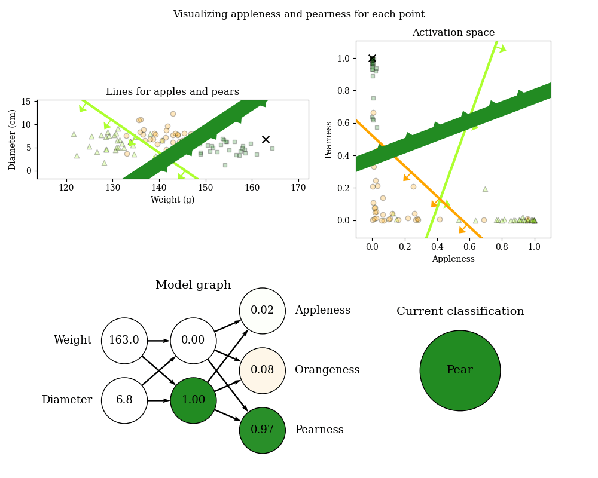
The “X” in the top-left and top-right plots is “the same point”, but in different spaces. The model graph shows the activations values of the first and second layers. The first layer is the column of circles in the middle and the second layer is the rightmost column of circles.
Similarly to the previous animation we see how the lines activate respective to the position of the point X. Some takeaways of the animation are:
- When X is in front of the apple line in the input space (the top-left plot), it is located among the apples in the activation space.
- When X is in front of the pear line in the input space, it is located among the pears in the activation space.
- When X is behind both apple and pear lines in the input space it is located among the oranges in the activation space.
- The current classification is based on which line in the activation space is most activated.
Imagine if the patterns of the data had been more complex, then maybe two layers wouldn't have been enough to separate the classes properly, we could have added another “layer of lines”.
Generally speaking we can add as many layers of lines as we would like! To add another layer we could use the activations of the lines in the activation space to get a “deeper activation space” and so on.
This is basically how a simple artificial neural network works! Just a bunch of lines working together both in parallel and serial attempting to separate bunches of data (if you are doing classification).
Key takeaways and some more info
The “lines” are actually hyperplanes
The reason I managed to “dissect” neural networks the way I did in this article, is because the dimension of the input data was only two. If I were to use three-dimensional data (for example by adding a measurement for water content as well) then the boundaries would have been visualized as 3D planes instead of 2D lines. Generally speaking, the decision boundaries are hyperplanes. Since I used two-dimensional data I could visualize the boundaries as “two-dimensional hyperplanes”, which are lines.
The key takeaway here is that a node in neural network essentially represents a separating boundary which activates based on how far in front or behind a point is from it.
The “lines” are visualizations of perceptrons
A line in this article is actually a representation of the weights of a perceptron (a “neuron”) found in neural networks. The second figure at the top of this article is namely a diagram of a perceptron.
Interpreting neural network diagrams (graphs) as a bunch of hyperplanes
When you see an image of a neural network like this
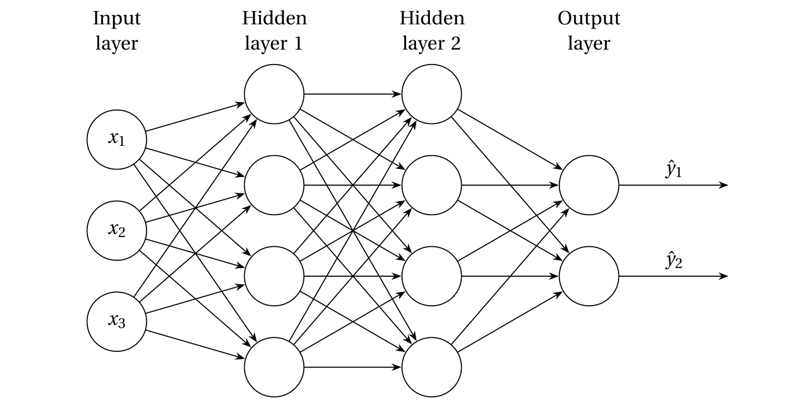
A graph representation of a neural network with an input layer consisting of three features, with two hidden layers each consisting of four nodes (often called perceptrons), and an output layer of two nodes (implying there are two classes).
You can immediately tell that the neural network consists 10 hyperplanes that work together to classify two different classes. The number of hyperplanes is deducted by counting the number of nodes that have at least one arrow pointing to them, or just count all the nodes minus the nodes in the input layer. If it is unclear why this works I encourage you to inspect the relation between the model graph and lines in the gif above.
The number of classes is easily checked by counting the number of nodes in the output layer (the last layer). Note that if you only have two classes you can get by with a single node in the output layer like in this figure:
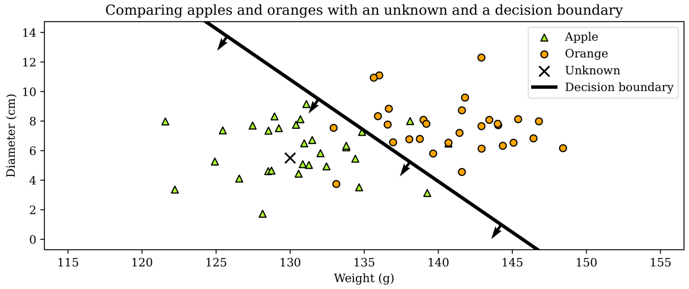
Same figure as earlier found at the beginning of the “Classifying apples and oranges using lines” section. This figure illustrates a network consisting of one lone node.
as the other class is implied by the fact that the single node isn't activated.
All the figures you have seen in this article are based on actual neural networks. You can find all relevant code in the following repository: https://github.com/Napam/nnarticle.
Further reading
In this article I have not explained how to programmatically find the “correct” lines for the data, as I have seemingly positioned my lines by manually placing them. The act of programmatically finding the “correct” lines is the learning part of machine learning. You can find many resources for that using the keywords “gradient descent”, “back propagation” and “model selection”.
The more math-involved and rigorous equivalents of this article would be resources that explain the concept of “forward propagation”.